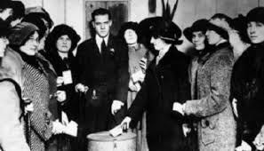
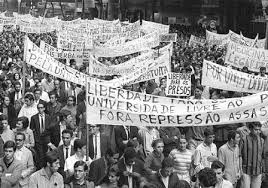
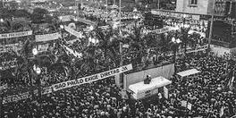
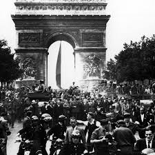
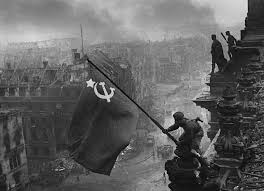
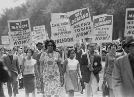
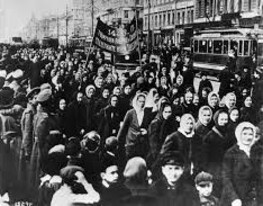
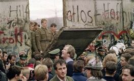
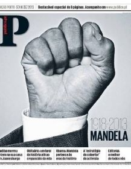

Primeiro Voto Feminino no Brasil – 1928. Registro histórico do primeiro voto feminino no Brasil, uma conquista significativa na luta pelos direitos das mulheres.

A Passeata dos Cem Mil – 1968. Protesto em massa contra a ditadura militar no Brasil, refletindo a crescente mobilização popular por direitos e democracia.

Diretas Já – 1984. Uma das maiores mobilizações populares no Brasil, exigindo eleições diretas para a presidência e o fim da ditadura militar.

A Libertação de Paris – 1944. Fotografia marcante da libertação da cidade durante a Segunda Guerra Mundial, celebrando a resistência e a vitória sobre o nazismo.

Queda do Nazismo: Bandeira Soviética sobre o Reichstag – 1945. Imagem icônica da vitória sobre o regime nazista, simbolizando o fim da Segunda Guerra Mundial na Europa.

Marcha em Washington – 1963. Um marco na luta pelos direitos civis nos Estados Unidos, com Martin Luther King Jr. proferindo seu famoso discurso "I Have a Dream".

Greve das Operárias Têxteis – 1978. Momento de resistência das mulheres trabalhadoras contra condições de trabalho precárias durante a ditadura militar no Brasil.

A Queda do Muro de Berlim – 1989. Este evento histórico simbolizou o fim da Guerra Fria e a reunificação da Alemanha, marcando o colapso do regime comunista na Europa Oriental.

A Mão de Mandela – 1990. Imagem histórica de Nelson Mandela, após sua liberação da prisão, simbolizando a luta pela liberdade e igualdade na África do Sul.